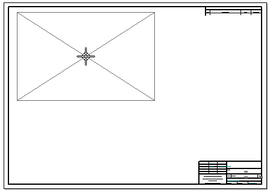

Specifying a preview type for drawing views
Before you click to place a drawing view, you can move the view around on the drawing sheet to position it. You can specify a preview type for the view using the Dynamic display option on the Drawing View Wizard tab in the Solid Edge Options dialog box. The preview type applies to most types of drawing views, not just those created with the View Wizard command.
-
When the Dynamic display check box is selected, a VHL preview is displayed. This enables you to see the model in its current view orientation and view scale.

-
When the check box is cleared, an extent box preview is displayed. This shows the relative size of the drawing view.

You can set this option for each model type and size. For example, you can specify that large assembly models display a preview using the extent box, so that performance is not affected, and that part and sheet metal models display a full preview using VHL rendering.